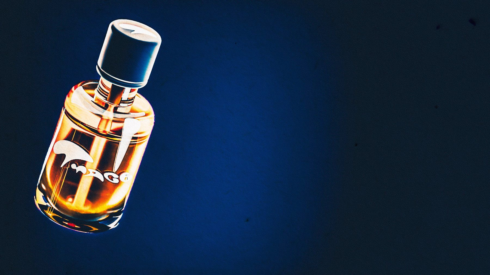
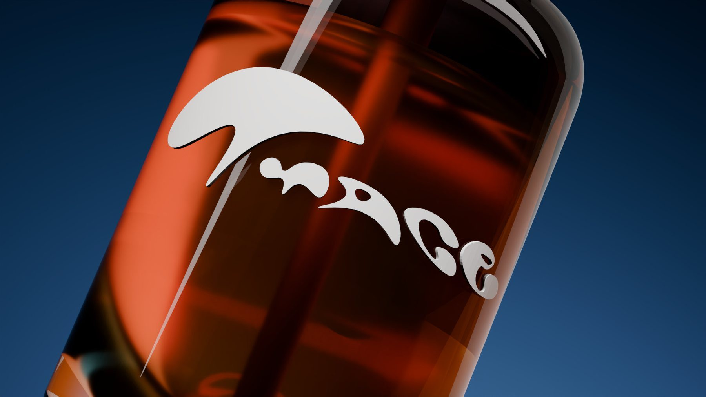
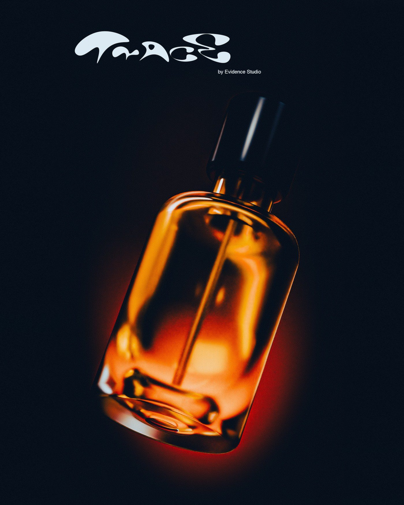

Evidence Studio
← All work

Trace
Exhibit No. 001 · Eau de Parfum
Discipline
Product visualisation, identity
Work
Modelling, look development, lighting, label artwork
Year
2026
Stills

Logotype

Neutral key